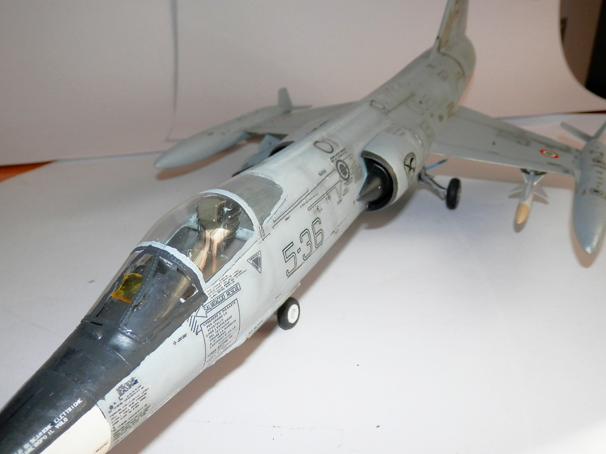
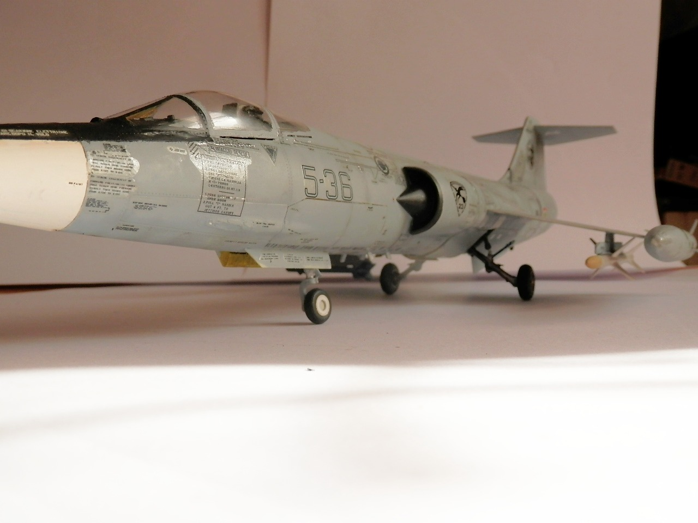
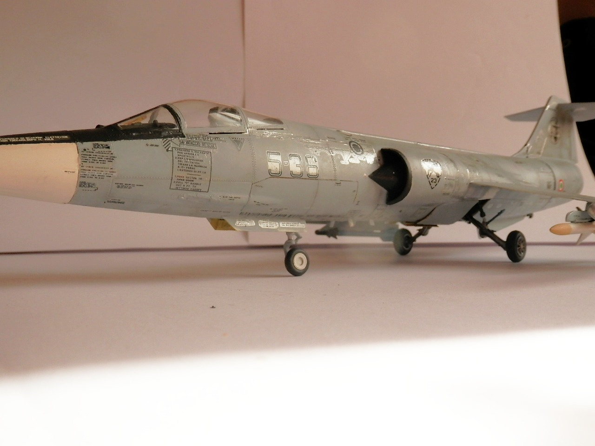
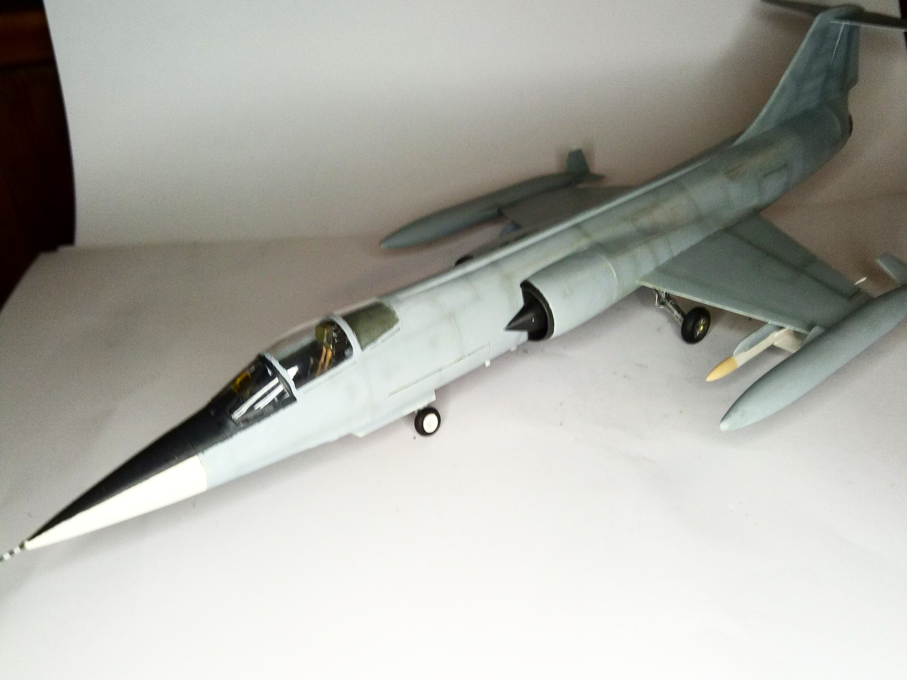
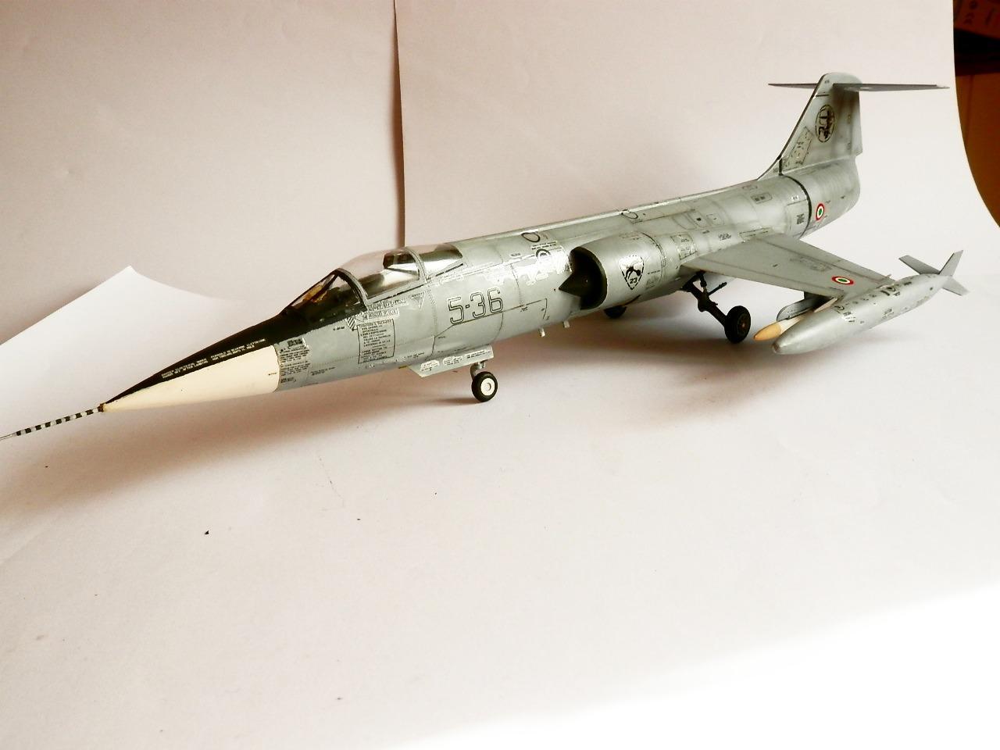
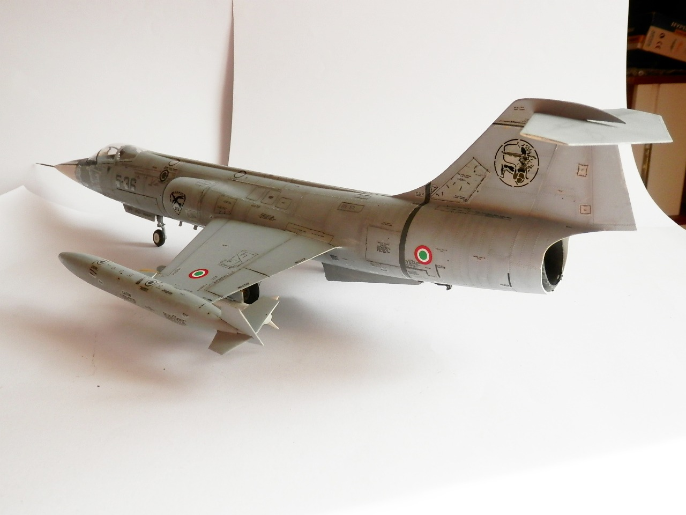
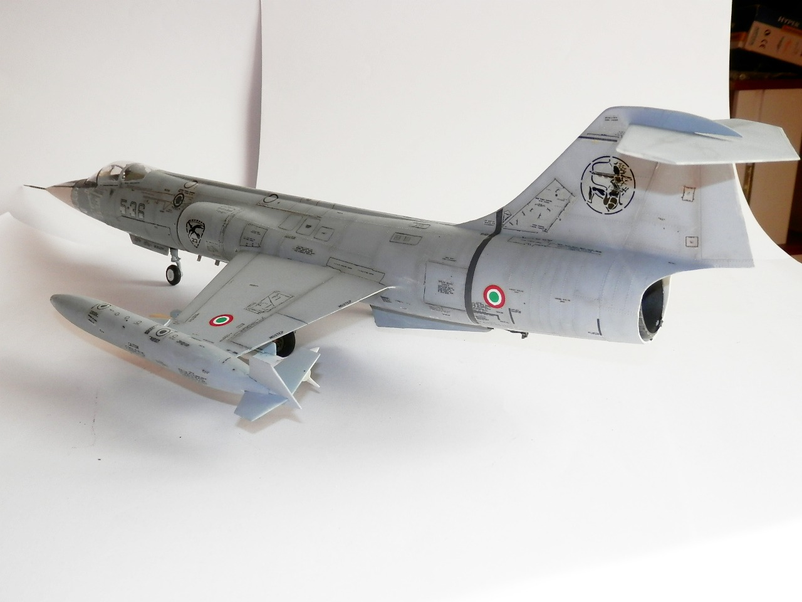
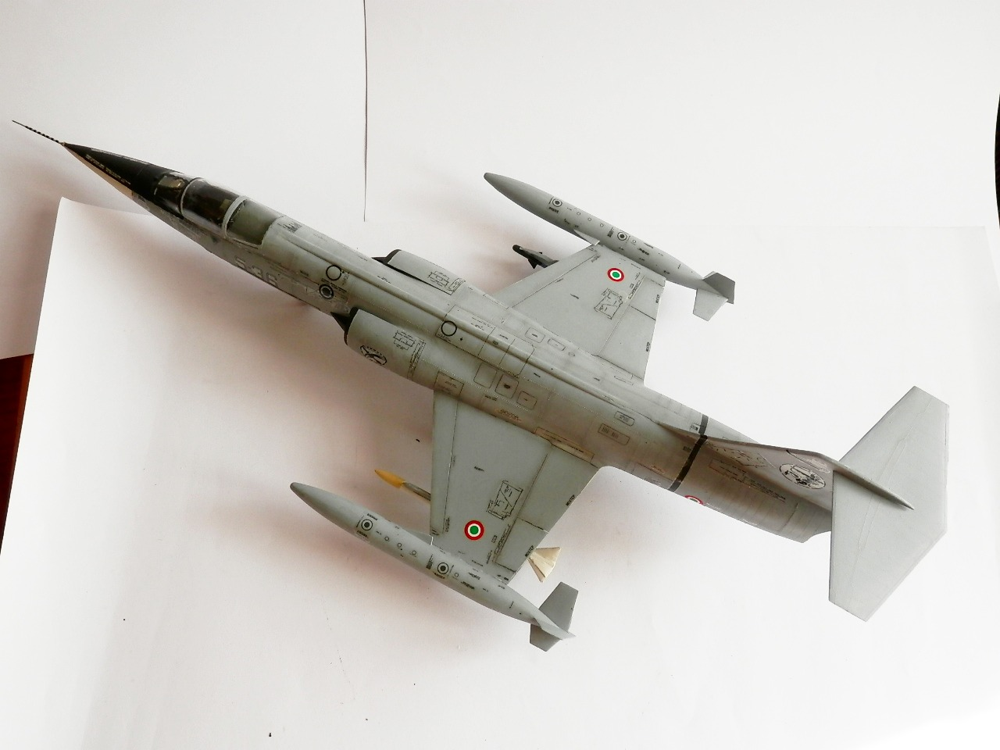
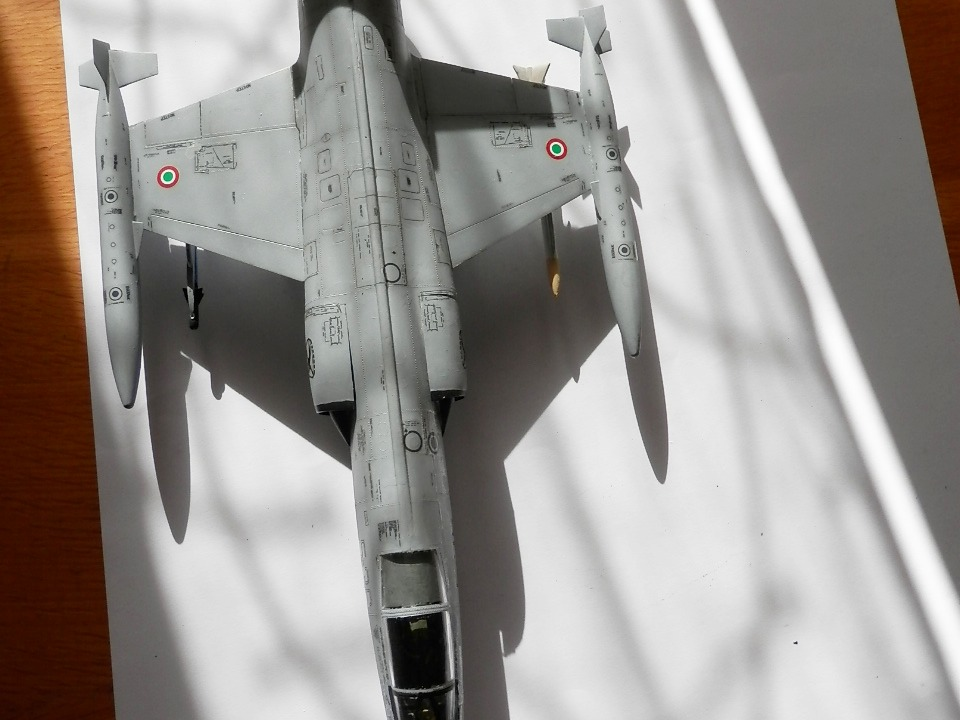

Aerei · scale model archive
Lockheed F104 S ASA
Lockheed F104 S ASA — Kit: Revell Scale: 1/32. Depicting an hybrid ASA version as the aircraft is missing the two rear underfuselage strakes instead of…

Photo gallery








English description
Depicting an hybrid ASA version as the aircraft is missing the two rear underfuselage strakes instead of one. I should add them...
Descrizione italiana
Rappresenta una versione ASA ibrida, perché all’aereo mancano le due derive ventrali posteriori invece di una sola. Dovrei aggiungerle...